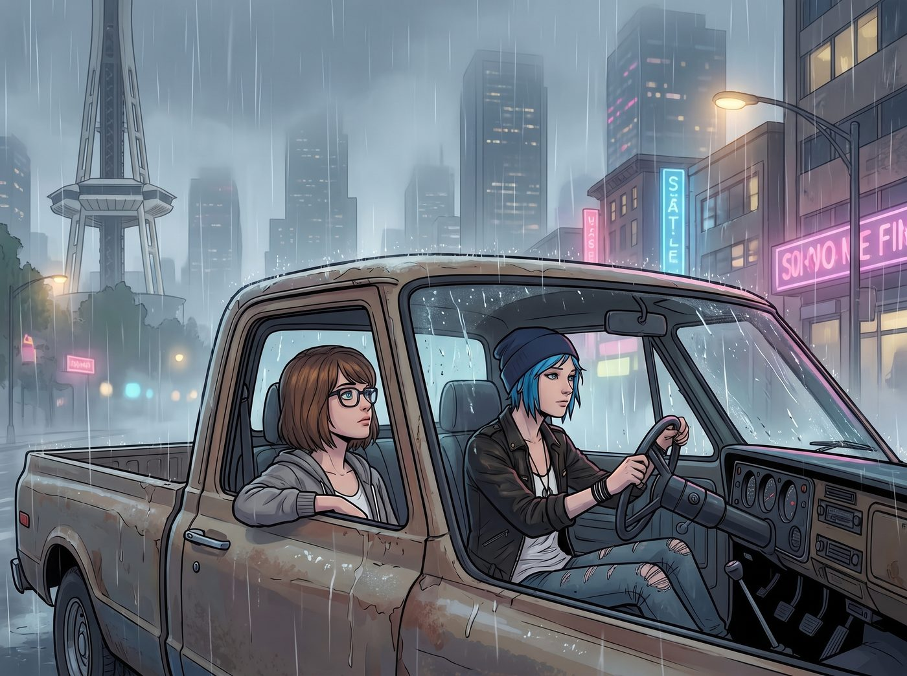

舊校園巡禮

一、重返西雅圖
離開那間虛偽的實習機構,兩人開著皮卡在雨霧瀰漫的西雅圖市區裡漫無目的地繞了一圈,誰都沒有立刻提議接下來要去哪裡。
最終,還是 Max 先開了口。
「我想帶妳去個地方,」她的聲音有點輕,望著窗外掠過的街景,「我以前讀書的高中。」
Chloe 側頭看她一眼,沒有多問,只是轉動方向盤,順著 Max 含糊的指引,朝著記憶深處那個方向開去。
二、社恐走廊
那所公立高中放假中,校園空蕩蕩的,只有零星幾個學生抱著書本匆匆走過。Max 帶著 Chloe,深一腳淺一腳地走進當年再熟悉不過的走廊,腳步卻帶著一種近乎陌生的遲疑。
「看,」她指向轉角一排鏽跡斑斑的儲物櫃,「那個是我當年的置物櫃,213號,我永遠記得密碼,因為我從來不敢在別人面前打開它,怕被看到裡面全是相機器材,顯得更怪。」
她又指向操場邊一張被藤蔓半掩的長椅。
「那裡,」她的聲音低了些,「是體育課那群人常坐的地方。有次他們笑我只會拿著拍立得拍落葉,說我『連個正常的興趣愛好都沒有』。我那天在儲物間躲了整整一節課,不敢出去。」
Chloe 握著她的手,沒有說話,只是靜靜地聽著,任由 Max 把這些塵封已久的、細碎的委屈,一點一點攤開在陽光下。
三、跨時空的撐腰
聽完最後一段,Chloe 忽然停下腳步,一把摟住 Max 的肩膀,把她整個人帶到那排儲物櫃前。
「等我一下。」她說著,從口袋裡摸出一支隨身攜帶的黑色油性筆。
「妳要幹嘛?」
「補一筆歷史。」Chloe 咧嘴一笑,在那面斑駁的置物櫃側板上,龍飛鳳舞地寫下一行字:
「Max & Chloe Were Here — 遲到了五年,但我們終於一起來了。」
寫完,她收起筆,滿意地端詳著自己的「傑作」,又轉頭望向不遠處那張長椅,忽然揚聲,對著剛好路過、一臉茫然的幾個學生喊道:
「喂,你們幾個!」
那幾個學生嚇了一跳,齊刷刷地停下腳步。
「以後誰敢在這條走廊嘲笑別人的興趣愛好,」Chloe 抱著手臂,擺出一副凶神惡煞卻帶著點滑稽的架勢,「老娘知道了,直接把他塞進垃圾桶,懂嗎?」
那幾個學生面面相覷,顯然完全摸不著頭腦,卻還是心虛地點了點頭,加快腳步匆匆離開。
Max 被她這副荒謬又認真的模樣逗得笑出聲,眼眶卻微微泛紅。
四、遲來的正義
「妳這是,」Max 笑著搖頭,「跨越時空,替我找回場子?」
「差不多,」Chloe 攬過她的肩膀,語氣裡帶著一絲少見的認真,「雖然老娘沒能在妳最難熬的那幾年陪在身邊,但現在既然來了,總得幫妳把當年欠下的公道,補回來一點。」
Max 靠進她懷裡,望著那面寫著兩人名字的置物櫃,又望向那張曾經帶給她無數難堪回憶的長椅——此刻,那些角落,不再只承載著孤獨和自卑的重量,反而多了一層屬於現在、屬於「他們」的、荒謬又溫暖的印記。
「謝謝妳,」她輕聲說,「陪我回來看看。」
「隨時奉陪,」Chloe 低頭,在她額頭落下一個輕柔的吻,「走吧,這條走廊看夠了,接下來,帶我去逛逛妳藏起來沒告訴我的西雅圖。」
兩人並肩走出校園,午後的陽光穿過雲層的縫隙,灑在濕漉漉的柏油路上,把身後那段沉重的少年記憶,連同剛剛補上的、荒謬又鄭重的塗鴉,一併留在了原地。